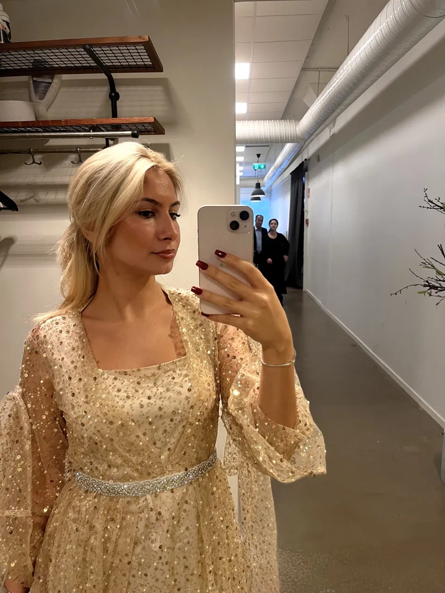
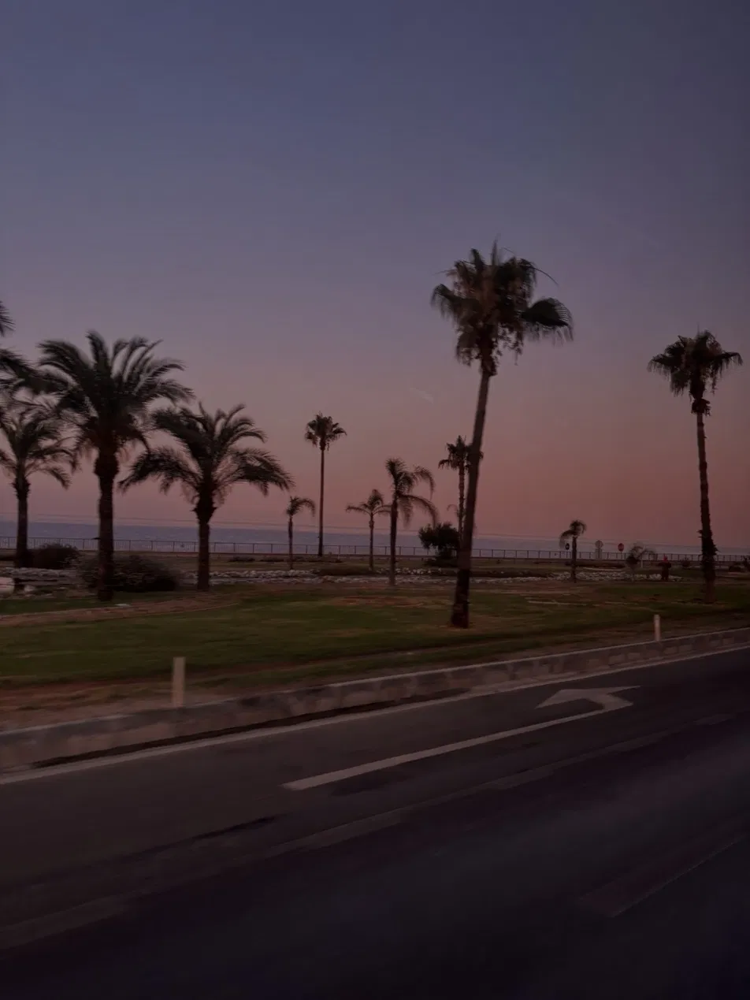

About me
My name is Avan Kamari, and I am studying to become a UX Engineer at Chas Academy in Stockholm, Sweden.

My background
I was born and raised in Sweden. Originally, I am from Kurdistan. My mother is from the Iraqi part of Kurdistan, and my father is from the Iranian part.
My hobbies:
- Makeup
- Shopping
- Watch series and movies
- Spend time with friends and family
My favorite songs:
- Fade Into You- Mazzy Star
- Only Girl (In The World)- Rihanna
- Good Enough- Jussie Smollett
Why UX?
I started without any coding experience, and I love learning something completely new. Every day I build something I couldn't do before.
What I'm learning
I'm learning HTML and CSS, and what I find most fun right now is CSS.
Fun facts:
- My favorite food is dolma, which is a dish from my home country.
- I dream of traveling to Bali, Indonesia
- I can't live without my family

My experience:
Restaurant assistant
I worked as a restaurant assistant for over two years. I handled the register and was responsible for managing deliveries. The job taught me to keep track of several things at once and to stay calm when it gets busy.
School projects
This page is my first project built with HTML, CSS and JavaScript. I also built an interactive playlist where you can play, pause and like songs.